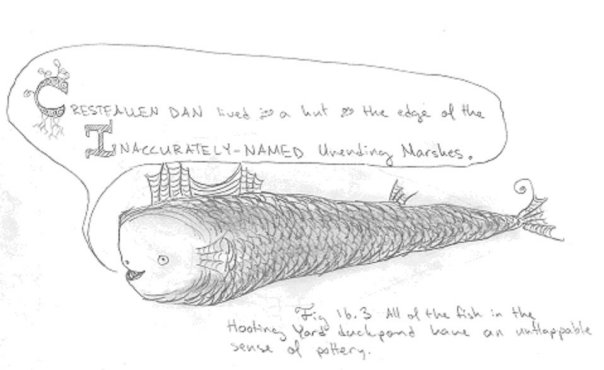

Monday, February the 23rd, 2004
back to: title, date or indexes
A number of readers have suggested that Hooting Yard's vision of the natural world is an extremely narrow one, overpopulated by birds, with the occasional badger thrown in, and all other life-forms excluded. There is, I suspect, some justice in this. You are more likely to come upon, let's say, a list of three-letter bird-names (auk, cob, emu, hen, jay, kea, moa, owl, pen, poe, roc, tit, tui) than an equivalent catalogue of bears, insects, or horses. As a corrective to this tunnel vision, reader Matt Hamilton has sent in this delightful picture of a fish. Matt lives on, or near, the banks of the Potomac, I believe, so this would appear to be a drawing based on natural observation.
